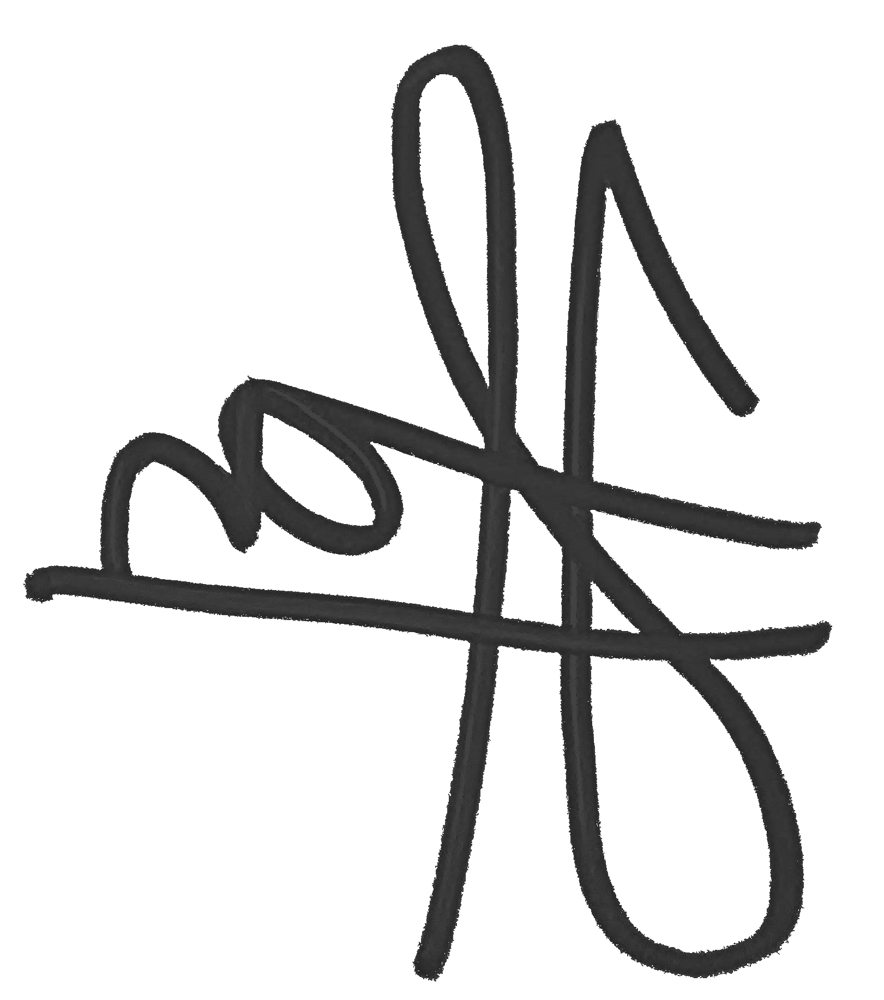

Tentang Kami
HamirPedia adalah perusahaan penyedia barang perangkat elektronik yang berdiri pada 15 Januari 2019. Didirikan oleh Munhamir, kantor HamirPedia dulunya hanya terdapat di Semarang, Jawa Tengah. Seiring dengan berjalannya waktu, hal tersebut ternyata juga diiringi dengan bertambahnya permintaan barang elektronik yang beragam dari para konsumen. Sejak saat itu, kami memutuskan untuk berkomitmen mengembangkan perusahaan ini dengan tetap mengutamakan kepuasan pelanggan.
Saat itu, HamirPedia sempat menjadi topik hangat oleh masyarakat karena dapat menyediakan berbagai macam perangkat elektronik dengan harga yang sangat bersaing. Sehingga pada bulan Juni 2019, akhirnya HamirPedia mampu membuka cabang pertamanya di Malang, Jawa Timur. Dibukanya cabang tersebut tentunya memberikan kabar gembira bagi warga Malang dan sekitarnya, karena selain kebutuhan elektronik mereka terpenuhi, HamirPedia cabang Malang juga berkontribusi dalam membuka lowongan pekerjaan bagi warga sekitar.
Memasuki akhir tahun 2019, dunia dikejutkan dengan pandemi Covid-19. Hal tersebut ternyata berdampak signifikan terhadap kehidupan sosial dan ekonomi dunia secara keseluruhan. Menggunakan masker dan mencuci tangan menjadi hal-hal yang diwajibkan dan ditekankan. Menyikapi hal tersebut, HamirPedia kemudian mencoba untuk melakukan pemasaran melalui antarmuka daring. Hingga pada Januari 2020, website resmi AreIsPedia bisa dapat digunakan untuk berbelanja kebutuhan elektronik secara online. Di bulan yang sama pula, HamirPedia juga hadir di perangkat Android dan iOS.
HamirPedia menghadirkan produk-produk elektronik berkualitas dari merek-merek ternama. Dengan mengedepankan kualitas produk serta didukung oleh karyawan-karyawan profesional yang telah berpengalaman dibidangnya, HamirPedia senantiasa berusaha untuk terus maksimal melayani kebutuhan anda dalam mendapatkan produk elektronik yang anda butuhkan. Hal itu terbukti, pada November 2020, AreIsPedia memenangkan penghargaan kategori Best Tech Marketplace 2020 pada ajang Playstore Awards 2020.
Dari Kami, selaku karyawan HamirPedia, mengucapkan terima kasih yang sebesar-besarnya kepada seluruh masyarakat Indonesia yang telah mempercayai kami sebagai tempat penyedia kebutuhan elektronik Anda. Semoga kedepannya, kami akan selalu terdepan di hati Anda semua.
CEO dan Founder HamirPedia

Munhamir